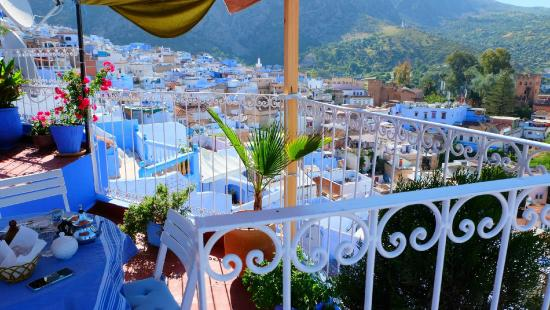
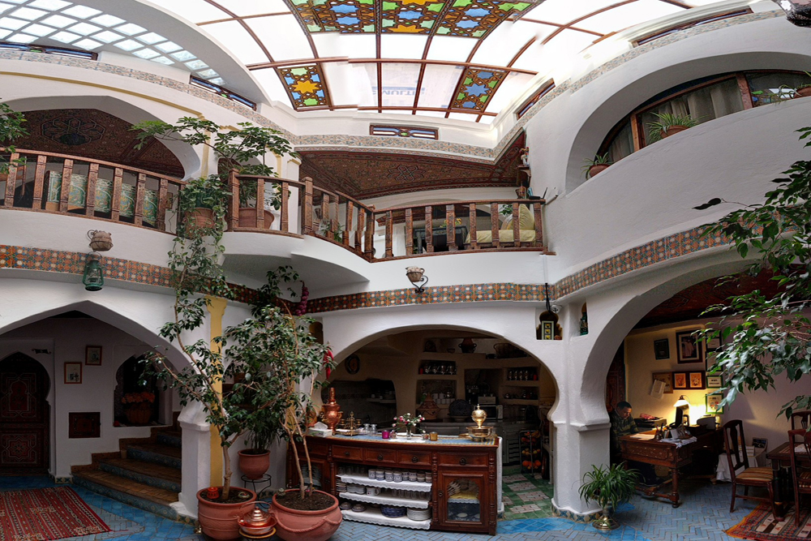

Chaouen est l'une des plus belles villes du Maroc qui contient de nombreux hôtels de luxe.
L'un des meilleurs hôtels pas chers de Chaouen est situé dans la région de Tangier-Tétouan, à seulement 200 mètres de la place Outa El Hammam et à 4,2 km du mont J. Tisuka.L'hôtel dispose d'un enregistrement et d'un départ express, d'un service de conciergerie, d'installations pour les personnes handicapées et de vélos.